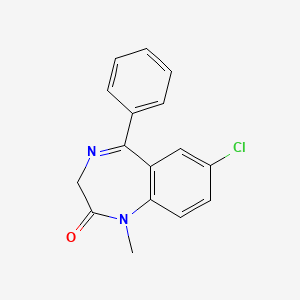
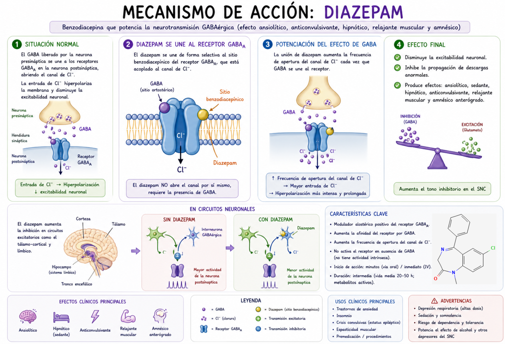

El Diazepam atraviesa rápidamente la barrera hematoencefálica y actúa sobre el sistema GABAérgico en el sistema nervioso central.
Se une de forma selectiva a un sitio alostérico del receptor GABA_A (sitio benzodiacepínico), distinto al sitio de unión del GABA.
En condiciones normales, el GABA se une a su receptor y abre un canal de cloro (Cl⁻), produciendo hiperpolarización neuronal; el diazepam aumenta la frecuencia de apertura de este canal en presencia de GABA, potenciando su efecto inhibidor sin activar el receptor por sí solo.
Como consecuencia, se incrementa la entrada de Cl⁻ al interior de la neurona, lo que genera una mayor hiperpolarización de la membrana y disminuye la probabilidad de alcanzar el umbral para disparar potenciales de acción.
Esto reduce la excitabilidad neuronal y la propagación de descargas anormales, lo que explica sus efectos anticonvulsivantes, ansiolíticos y sedantes.
Como resultado final, el diazepam actúa como modulador positivo del receptor GABA_A (benzodiacepina), aumenta la frecuencia de apertura del canal de Cl⁻ y potencia la inhibición neuronal.
El Diazepam es un modulador positivo del receptor GABA_A, se une al sitio benzodiacepínico y aumenta la frecuencia de apertura del canal de cloro en presencia de GABA. Es decir, potencia la acción del GABA, incrementa la entrada de Cl⁻, produce hiperpolarización neuronal y disminuye la excitabilidad del sistema nervioso central.
Audio explicativo
Material visual

